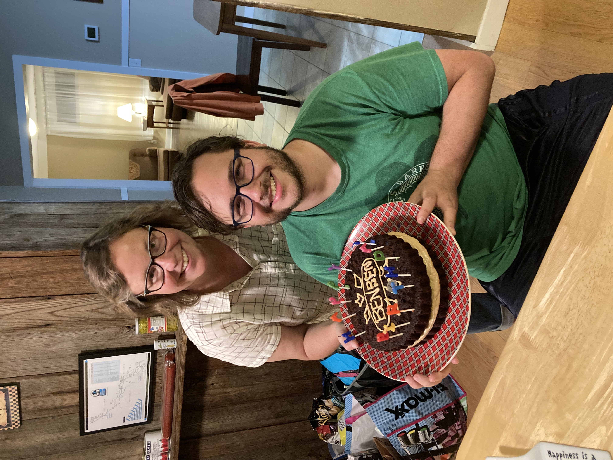

Chocolate Cake

Description
This cake is simple to make, moist and vegan! Can't beat that
Ingredients
- 3/4 cup Vegetable oil
- 2 cups cold water
- 2 tablespoons vinegar
- 1 teaspoon vanila
- 3 cups flour
- 2 cups sugar
- 1/2 cup cocoa
- 2 teaspoons baking soda
- 1 teaspoon salt
- dash of cinnamon
Steps
- Heat oven to 350 degrees
- Grease a 9X13 pan, or two 8 inch round pans
- Mix wet ingredients in one bowl
- Mix dry ingredients in a different, larger bowl
- Make a well in the dry ingredients and pour wet ingredients into it
- By hand, mix ingredients together until just combined - small lumps okay
- Pour batter into pan / pans
- Bake until a knife comes out clean from the middle, about 40 minutes
Happy Fixing Fun Things to Eat
Return to main page